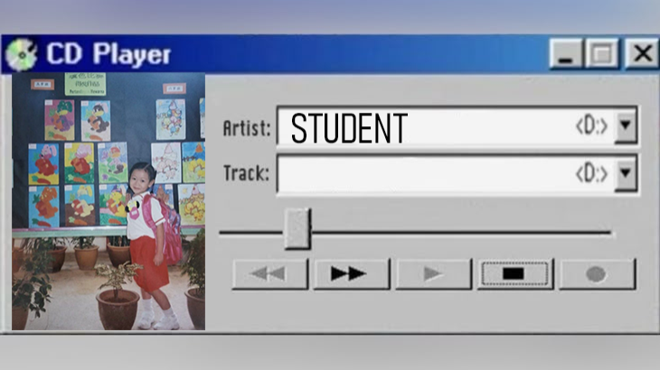
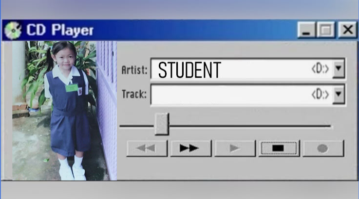
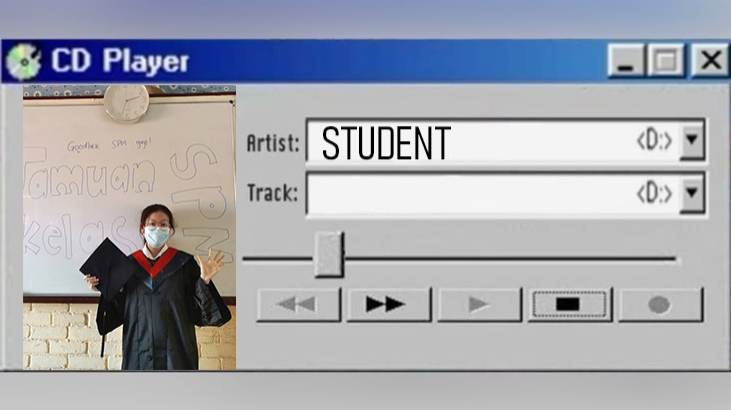
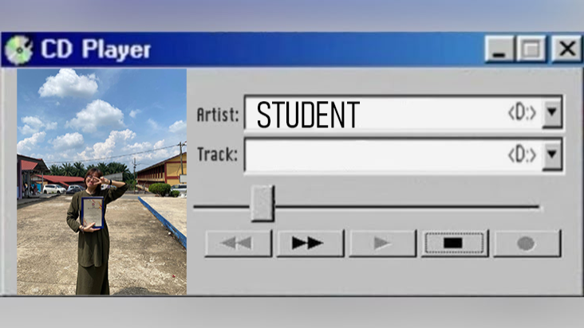
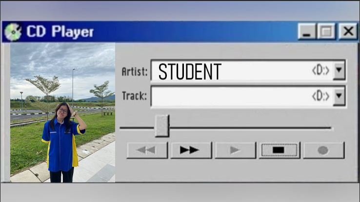

:: EDUCATION TIMELINE ::
📂 Kindergarten.exe

[ 2008 - 2011 ]
Tadika Buddhist Association, Jerantut
I WON AN AWARD IN THE COLORING COMPETITION.
📂 PrimarySchool.exe

[ 2012 - 2017 ]
Sekolah Jenis Kebangsaan Cina Sungai Jan, Jerantut
MY MOM TOOK THIS PICTURE OF MY FIRST DAY OF PRIMARY SCHOOL.
📂 SecondarySchool.exe

[ 2018 - 2022 ]
Sekolah Menengah Kebangsaan Jerantut, Jerantut
AFTER FINISH MY ENGLISH SPEAKING TEST FOR SIJIL PELAJARAN MALAYSIA (SPM).
📂 STPM.exe

[ 2023 - 2025 ]
Prauniversiti Sekolah Menengah Kebangsaan Jerantut, Jerantut
MISSION COMPLETED TWO YEARS OF FOUNDATION STUDIES AT SIJIL TERTINGGI PELAJARAN MALAYSIA (STPM) WITH CGPA 3.42.
📂 UniMAP.exe

[ 2025 - PRESENT ]
UNIVERSITI MALAYSIA PERLIS
I TOOK THIS PHOTO WITH MY FRIENDS AT THE END OF THE MSK. I BELIEVE I WILL SOON BE WEARING MY GRADUATION GOWN.
ACCESS LEVEL : FRIEND
MEMORY LOADED : 50%
MEMORY LOADED : 50%